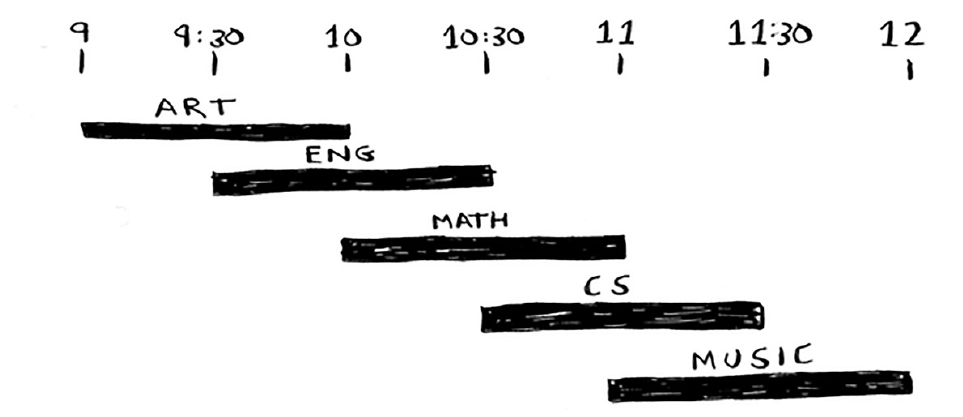

Python Programming
Lecture 15 Greedy Algorithm, Dynamic Programming
15.1 Greedy Algorithm
Greedy Algorithm
- A very simple problem-solving strategy
- So-called greedy algorithms are short-sighted, in that they make each choice in isolation, doing what looks good right here, right now. In many ways, eager or impatient might be better names for them.
- Example: The classroom scheduling problem
- Suppose you have a classroom and want to hold as many classes here as possible. You get a list of classes.


- You want to hold as many classes as possible in this classroom. How do you pick what set of classes to hold, so that you get the biggest set of classes possible?
- Here's how the greedy algorithm works
- Pick the class that ends the soonest. This is the first class you'll hold in this classroom.
- Now, you have to pick a class that starts after the first class. Again, pick the class that ends the soonest. This is the second class you'll hold.

The 0-1 Knapsack Problem
- Suppose you're a greedy thief. You're in a store with a knapsack, and there are all these items you can steal. But you can only take what you can fit in your knapsack. The knapsack can hold 35 pounds.
- You're trying to maximize the value of the items you put in your knapsack. What algorithm do you use?

- Your knapsack can hold 35 pounds of items. The stereo system is the most expensive, so you steal that.
- If you'd picked the laptop and the guitar instead, you could have had $3,500 worth of loot!
The Set-covering Problem
- Suppose you're starting a radio show. You want to reach listeners in all 50 states. You have to decide what stations to play on to reach all those listeners. It costs money to be on each station, so you're trying to minimize the number of stations you play on. You have a list of stations.


- List every possible subset of stations. This is called the power set. There are $2^n$ possible subsets.
- From these, pick the set with the smallest number of stations that covers all 50 states.

- (Greedy) Pick the station that covers the most states that haven’t been covered yet. It's OK if the station covers some states that have been covered already.
- Repeat until all the states are covered. $O(n^2)$
The Traveling Salesman Problem (TSP)
- Given a list of cities and the distances between each pair of cities, what is the shortest possible route that visits each city exactly once and returns to the origin city?
- There are six total routes, two for each city you can start at.
- How many possible routes are there for six cities? If you guessed 720, you're right. 5,040 for 7 cities, 40,320 for 8 cities.
- (Greedy) Arbitrarily pick a start city. Then, each time the salesperson has to pick the next city to visit, they pick the closest unvisited city.
15.2 Dynamic Programming
The 0-1 Knapsack Problem
- Suppose you're a greedy thief. You're in a store with a knapsack, and there are all these items you can steal. But you can only take what you can fit in your knapsack. The knapsack can hold 4 pounds.
- You're trying to maximize the value of the items you put in your knapsack. What algorithm do you use?

- The simplest algorithm is this: you try every possible set of goods and find the set that gives you the most value. This algorithm takes $O(2^n)$ time.
Dynamic Programming
- Dynamic programming starts by solving subproblems and builds up to solving the big problem.
- Every dynamic-programming algorithm starts with a grid. Here's a grid for the knapsack problem.
- At each cell, there's a simple decision: do you steal the item or not?
- You have only the guitar to choose from in the first row.
- At every row, you can steal the item at that row or the items in the rows above it. So you can't choose to steal the laptop right now, but you can steal the stereo and/or the guitar.
- The old max value was 1,500, but if you put the stereo in there instead, the value is 3,000!

- The laptop weighs 3 lb, so it won't fit into a 1 lb or a 2 lb knapsack. The estimate for the first two cells stays at $1,500.

- At 4 lb, things get really interesting. This is an important part. The current estimate is 3,000. You can put the laptop in the knapsack, but it's only worth 2,000. The laptop weighs only 3 lb, so you have 1 lb free! You could put something in this 1 lb. What’s the maximum value you can fit into 1 lb of space? Well, you've been calculating it all along.

- Assume $w_{1},\,w_{2},\,\ldots ,\,w_{n},\,w$ are strictly positive integers. Define $m[i,w]$ to be the maximum value that can be attained with weight less than or equal to $w$ using items up to $i$ (first $i$ items).
- We can define $m[i,w]$ recursively as follows:
- $m[0,\,w]=0$
- $m[i,\,w]=m[i-1,\,w]$ if $w_{i}>w$ (the new item > the current weight limit)
- $m[i,\,w]=\max(m[i-1,\,w],\,m[i-1,w-w_{i}]+v_{i})$ if $w_{i}\leqslant w$
def knapsack(w,v,num,mw):
res=[[-1 for j in range(mw+1)] for i in range(num+1)]
for j in range(mw+1):
res[0][j]=0
for i in range(1,num+1):
for j in range(1,mw+1):
res[i][j]=res[i-1][j]
if j>=w[i-1] and res[i][j] < res[i-1][j-w[i-1]]+v[i-1]:
res[i][j]=res[i-1][j-w[i-1]]+v[i-1]
return res[num][mw]
w=[2,2,6,5,4]
v=[6,3,5,4,6]
print(knapsack(w,v,len(w),10))
-
What happens if you add an item?


- Would the value of a column ever go down? Is this possible? No
- What happens if you change the order of the rows? The answer does not change
- What happens if you add a smaller item?
- Can you steal fractions of an item? DP cannot solve it
- Dynamic programming only works when each subproblem is discrete—when it doesn't depend on other subproblems.
- The complexity of Dynamic programming is pseudo-polynomial (伪多项式时间). n(not real polynomial). An $O(nW)$ time algorithm is possible using dynamic programming; since the number $W$ only needs $log W$ bits to describe, this algorithm runs in pseudo-polynomial time.
- Example: testing whether a number n is prime
15.3 DP: Examples
Longest Common Substring (最长公共子串)
- Dynamic programming is useful when you're trying to optimize something given a constraint. In the knapsack problem, you had to maximize the value of the goods you stole, constrained by the size of the knapsack.
- You can use dynamic programming when the problem can be broken into discrete subproblems, and they don't depend on each other.
- Suppose you run dictionary.com. Someone types in a word, and you give them the definition.
- But if someone misspells a word, you want to be able to guess what word they meant. Alex is searching for fish, but he accidentally put in hish. That's not a word in your dictionary, but you have a list of words that are similar.
- What substring do hish and fish have in common?
Making the grid
- What are the values of the cells?
- How do you divide this problem into subproblems?
- What are the axes of the grid?
- $c(i,\,j)=c(i-1,j-1)+1$ if $x_i=y_i$
- $c(i,\,j)=0$ if $i>0$ or $j>0$, $x_i!=y_i$
def common_substring(s1,s2):
cell=[[] for x in range(len(s1))]
for x in cell:
for y in range(len(s2)):
x.append(0)
longest=0
for i in range(len(s1)):
for j in range(len(s2)):
if i==0 or j==0:
if s1[i]==s2[j]:
cell[i][j]=1
else:
if s1[i]==s2[j]:
cell[i][j]=cell[i-1][j-1]+1
if cell[i][j]>longest:
longest = cell[i][j]
return longest
Longest Common Subsequence (最长公共子序列)
- The number of letters in a sequence that the two words have in common.


- $c(i,\,j)=c(i-1,j-1)+1$ if $x_i=y_i$
- $c(i,\,j)=max(c(i-1,j),c(i,j-1))$ if $i>0$ or $j>0$, $x_i!=y_i$
def common_subsequence(s1,s2):
cell=[[] for x in range(len(s1))]
for x in cell:
for y in range(len(s2)):
x.append(0)
longest=0
for i in range(len(s1)):
for j in range(len(s2)):
if i==0 or j==0:
if s1[i]==s2[j]:
cell[i][j]=1
else:
if s1[i]==s2[j]:
cell[i][j]=cell[i-1][j-1]+1
else:
cell[i][j]=max(cell[i-1][j],cell[i][j-1])
if cell[i][j]>longest:
longest = cell[i][j]
return longest
Coin Optimization Problem
- Suppose a customer puts in a dollar bill and purchases an item for 37 cents. What is the smallest number of coins you can use to make change? (63 cents)
- 25*2+10+1*3 (Greedy Algorithm)
- In addition to the usual 1,5,10 and 25 cent coins they also have a 21 cent coin. In this instance our greedy algorithm fails to find the optimal solution for 63 cents in change.
- The optimal answer is three 21 cent pieces.
# Recursive Version of Coin Optimization Problem
def recMC(coinValueList,change):
minCoins = change
if change in coinValueList:
return 1
else:
for i in [c for c in coinValueList if c <= change]:
numCoins = 1 + recMC(coinValueList,change-i)
if numCoins < minCoins:
minCoins = numCoins
return minCoins
print(recMC([1,5,10,25],63))
- The trouble with the algorithm is that it is extremely inefficient. In fact it takes 67716925 recursive calls to find the optimal solution to the 4 coins, 63 cents problem. The figure below illustrates a small fraction of the 377 function calls needed to find the optimal set of coins to make change for 26 cents.
- The main problem is that we are re-doing too many calculations. The algorithm recalculate the optimal number of coins to make change for 15 cents at least 3 times, and each of them takes 52 function calls.

- The key to cutting down on the amount of work we do is to remember some of the past results so we can avoid recomputing results we already know.
- A dynamic programming algorithm will take a systematic approach to the problem.
- $coin(change)=coin(change-i)+1$, $i\in\{coinValueList\}$
# DP solution
def dpMakeChange(coinValueList,change,minCoins):
for cents in range(change+1):
coinCount = cents
for j in [c for c in coinValueList if c <= cents]:
if minCoins[cents-j] + 1 < coinCount:
coinCount = minCoins[cents-j]+1
minCoins[cents] = coinCount
return minCoins[change]
print(dpMakeChange([1,5,10,25],63,{}))
# Modified DP solution
def dpMakeChange(coinValueList,change,minCoins):
for cents in range(change+1):
coinCount = cents
newCoin = 1
for j in [c for c in coinValueList if c <= cents]:
if minCoins[cents-j] + 1 < coinCount:
coinCount = minCoins[cents-j]+1
newCoin = j
minCoins[cents] = coinCount
coinsUsed[cents] = newCoin
return minCoins[change]
def printCoins(coinsUsed,change):
coin = change
while coin > 0:
thisCoin = coinsUsed[coin]
print(thisCoin)
coin = coin - thisCoin
coinsUsed={}
print(dpMakeChange([1,5,10,25],63,{}))
printCoins(coinsUsed, 63)
Summary
- Greedy Algorithm
- Dynamic Programming